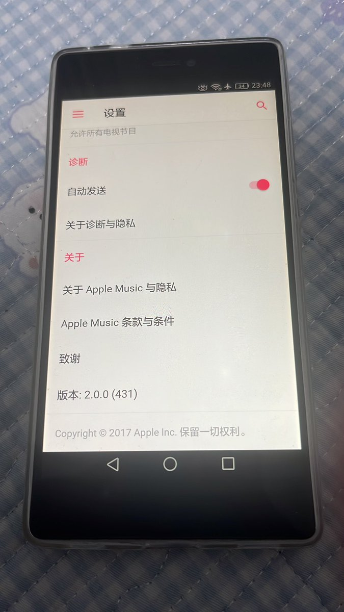
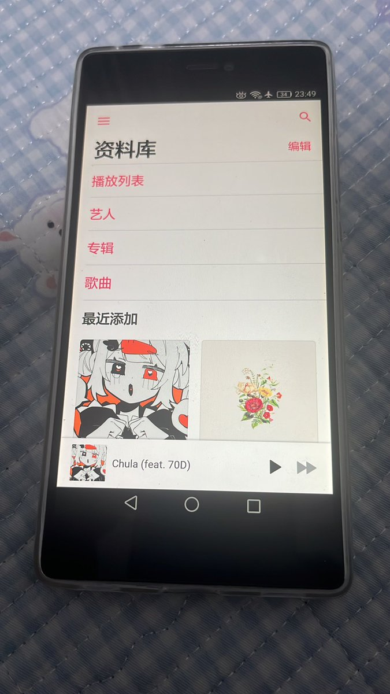

白羽🏳️⚧️🍥三代目（推友找回中，喵～互关捏
@duorendusk
@Qiongli_BAKA 我也有一台P8，电池废了，之前插电还能开机，到后来插电也不行了，一直卡在开机界面


穹璃吖
@Qiongli_BAKA
废物华为p8
Apple Music18年以后的版本同步资料库就闪退
安卓6根摆设一样
废物安装器安装个软件要半个小时
不如oppo r7一根，r7还能看1080p60的视频，一些新软件还不卡
一个年份的手机华为怎么这么废物
am只能用2.0了 https://t.co/M0Ouf5cYFZ